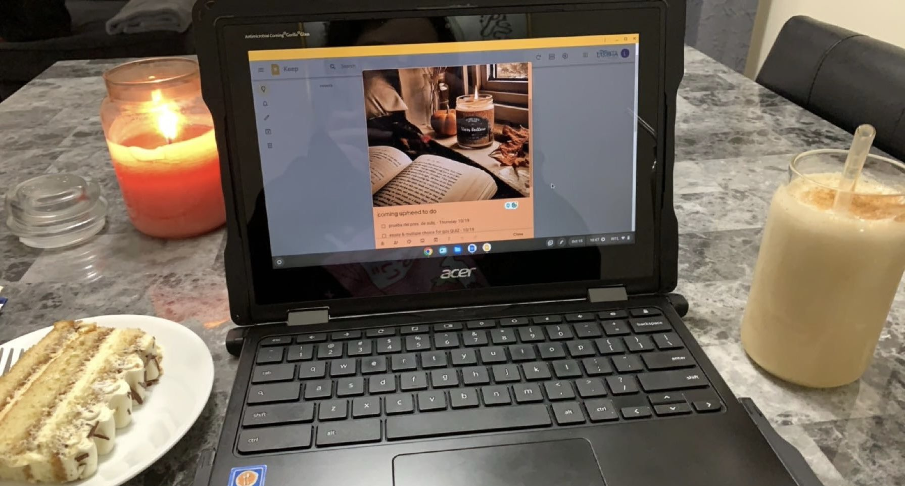

Strategic, nurturing, and quietly powerful. This is the space where my story unfolds.

I’m a student at the University of Cincinnati, focused on building technical skills while staying true to my creative vision. I enjoy designing projects that balance clarity with personality, from portfolio sites to branded documents, and I’m always looking for ways to make technology feel approachable and authentic. Outside of class, I experiment with personal tech projects and explore design workflows that reflect both strategy and comfort.
Every project I create is rooted in clarity and care. I focus on building content that is authentic, branded visuals that build trust, and formatting that makes each document feel approachable and polished. Whether I’m helping someone prepare for opportunities or tracking my own savings, I approach it all with strategy and creativity.